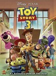

Metacritic: All-Time High Scores
http://www.metacritic.com/film/highscores.shtml
Outdated since Metacritic no longer lists IMDb IDs and thus this can not be automatically updated.
List contains: 198 items, 393.2 hours. (1 are missing runtime)
Outdated since Metacritic no longer lists IMDb IDs and thus this can not be automatically updated.
List contains: 198 items, 393.2 hours. (1 are missing runtime)
Stephen Klancher
...has seen 68
...has seen 141.7 hours
...has not seen 251.4 hours

Timeline - Covers
Most Recent:
The English Patient
First Unseen:
Army of Shadows (# 3)
...has seen 68
...has seen 141.7 hours
...has not seen 251.4 hours
Timeline - Covers
Most Recent:
The English Patient
First Unseen:
Army of Shadows (# 3)
1.

The Godfather (1972) Releases on 1972-03-24
Stephen Klancher: SEEN 
I don't remember much about this movie directly. The main thing I remember is a comment from a friend while we all watched it together the summer before college. My girlfriend at the time was either disinterested or bothered by the violence, whereas I thought it was a cool movie. By my friend's observation, this was the first time in a long time that I insisted on an opinion contrary to hers. I don't remember being that bad, but the observation was memorable, and this movie reminds me of it.


4.

Pan's Labyrinth (2006) Releases on 2007-01-19
Stephen Klancher: January 27, 2007
This was disappointing to me because I wanted the whole movie to be like the fantasy scenes on which the trailer focused. Also "Pan's Labyrinth" became a pronouncement of intention to crush a man's face with a bottle as was done in this movie.

6.

Dr. Strangelove or: How I Learned to Stop Worrying and Love the Bomb (1964)
Stephen Klancher: SEEN
Peter Sellers is amazing. Just remember, "you can't fight in here! This is the War Room!"
7.

Ratatouille (2007)
Stephen Klancher: September 24, 2007
I took my little sister Maddi to see this. Pretty good for a family movie.
8.
The Manchurian Candidate (1962)
Stephen Klancher: April 8, 2009
Saw the remake first... there are some interesting differences between them but both are fun.
9.

Spirited Away (2001) Releases on 2001-07-20
Stephen Klancher: April 6, 2003
I watched with in a theater in Bakersfield with my mom. I don't know if it was a rerelease or late after the release or if this is all they did in Bakersfield, but I seem to remember that it was only playing on this one screen in town and it was an abnormally small one.
I really enjoyed the animation and the fantasy of the whole setting.
I really enjoyed the animation and the fantasy of the whole setting.
10.

Pulp Fiction (1994) Releases on 1994-10-14
Stephen Klancher: SEEN
Very fun. Reading Quentin Tarantino and Philosophy (http://www.amazon.com/Quentin-Tarantino-Philosophy-Popular-Culture/dp/0812696344) made it even more so.


14.

WALL·E (2008)
Stephen Klancher: July 27, 2008
I saw this with Tim and his wife at the tail end of its theater run. Cute movie and the first half or so is another good example of how much can be communicated with no verbal dialog.

16.

The Lord of the Rings: The Return of the King (2003) Releases on 2003-12-17
Stephen Klancher: December 17, 2003
Probably my favorite of the trilogy, but they are all fantastic.


19.

Crouching Tiger, Hidden Dragon (2000)
Stephen Klancher: SEEN
I remember being so pleased when I watched this and, without looking at the subtitles, I understood the phrase "I don't know" spoken in Chinese.
20.
Schindler's List (1993)
Stephen Klancher: SEEN
I watched this in my 9th grade history class. Liam Neeson back when his only power was being German. No force, no lightsaber. But seriously, this is a serious movie. I don't remember much of the specifics at this point, but watching Life is Beautiful more recently made me think of watching this.
21.

Amadeus (1984) Releases on 1969-12-31
Stephen Klancher: March 9, 2004
I think watched this for extra credit for a music class in the beginning of college. It is a super fun movie. Very enjoyable and cool music.

23.

The Diving Bell and the Butterfly (2007)
Stephen Klancher: March 18, 2010
Especially in the beginning, some of this was really hard to watch because it was through his perspective and his vision would dim, his eye would wander, and of course he would blink a lot. But then there are worse ways to spend time than watching beautiful women smiling and making eye contact while reciting the alphabet in French. Interesting movie overall.

25.

Raging Bull (1980) Releases on 1980-12-19
Stephen Klancher: September 30, 2008
"You fuck my wife?" Is the moral not to be an asshole and beat your wife? I didn't care for this movie.

27.

There Will Be Blood (2007)
Stephen Klancher: April 17, 2008
Omg he'll drink your milkshake. Really, he'll do it. I think there may have been a good movie here. But all I remember is that he'll drink your milkshake.
28.
Toy Story (1995)
Stephen Klancher: SEEN
Pixar is always pretty solid and Tim Allen plus Tom Hanks make for some fun recognizable voice acting.
29.

The Lord of the Rings: The Fellowship of the Ring (2001) Releases on 2001-12-19
Stephen Klancher: SEEN
I read half-way through the books, quit for a while, then finished right before this came out. I actually like the movies better. I enjoy all three movies, but one notable thing about this one was much fun it was that everyone around me was really into it at the time. The fact that the girls I was friends with and girlfriend at the time were drooling over the actors just added another reason for everyone to be enthusiastic and want to keep rewatching it. So yeah, fun times. :-)

31.

Toy Story 3 (2010) Releases on 2010-06-18
Stephen Klancher: June 26, 2010
That was a great movie. The humor was excellent throughout and the 3D wasn't so much showy as it was just a natural part of a rendered movie.


34.

Star Wars: Episode IV - A New Hope (1977)
Stephen Klancher: SEEN
I am very much a Star Wars fan. I've read about 40 books, played a handful of games, and seen most of what there is to see. There were some summers growing up where I was mostly watching the Star Wars trilogy and playing Mario 3.
2011-02-26 - Watched Star Wars Begins, the excellent fan-made documentary.
2011-02-26 - Watched Star Wars Begins, the excellent fan-made documentary.

38.
Do the Right Thing (1989)
Stephen Klancher: November 5, 2003
I watched this in the first quarter of college for an Anthropology class titled Debating Multiculturalism. Though it's not the kind of thing I'd want to watch all the time, this movie did a great job of conveying the environment of racial tension. For many of the characters you could see their blatant flaws, but also their more human qualities that made them believable characters and made the events in the movie all the more tragic.
41.

Vals Im Bashir (2008)
Stephen Klancher: August 17, 2009
Incredibly cool visual style which added to the surreal path of tracing his memories.
42.

No Country for Old Men (2007)
Stephen Klancher: November 19, 2007
Wow, this was cool. The ending was kinda like, "wait, what?" but the bad guy Anton was very memorable. "What's the most you ever lost on a coin toss?"
43.

Raiders of the Lost Ark (1981)
Stephen Klancher: SEEN
I love Indiana Jones and Harrison Ford. I watched a lot of Star Wars and Indiana Jones while growing up. Just thinking about it makes me want to watch again...


56.
The Incredibles (2004)
Stephen Klancher: SEEN
Pixar movies are pretty great. They do a great job of making either a kids movie that adults can enjoy or just a good movie which happens to be acceptable for kids as well.


61.

45365 (2009)
Stephen Klancher: December 26, 2010
Not something I would typically want to watch, but my mom was interested so we watched it the day after Christmas. To its credit, it managed to hold my interest, which was surprising given that it was just loosely connected scenes from a small town.

64.
The Truman Show (1998)
Stephen Klancher: SEEN
I loved this movie. The only problem was it gave me a more specific scenario for my general paranoia to latch on to. Clearly my life is full of people behind the scenes watching and manipulating my life. If I tune my radio just right I might be able to hear their radio chatter...

66.

Persepolis (2007)


74.

Borat: Cultural Learnings of America for Make Benefit Glorious Nation of Kazakhstan (2006) Releases on 2006-11-03
Stephen Klancher: November 9, 2006
I did think this was funny, but I clearly did not think it was as funny as the rest of the theater.
75.

Finding Nemo (2003)
Stephen Klancher: SEEN
The main thing I remember about this movie was that it had very pretty color. And I think I watched it with a few other people in the common room of our floor of my freshman dorm.
76.

Eternal Sunshine of the Spotless Mind (2004) Releases on 1969-12-31
Stephen Klancher: SEEN
I love this movie. Would I zap my brain? Probably. Maybe I already did. How would I know? Whatever. I love this movie.

80.

Goodfellas (1990)
Stephen Klancher: SEEN
I remember choosing to <i>not</i> watch this with Brett, then watching it maybe a year later and thinking I was stupid for missing out on it. Cool movie!


85.

The Lord of the Rings: The Two Towers (2002) Releases on 2002-12-18


95.

Donnie Darko (2001) Releases on 1969-12-31
Stephen Klancher: SEEN
I remember getting mad because I was watching this at Alyson's house with a group where half of the people were really interested in the movie and the less interested half were making it hard to hear and enjoy it. Regardless it was fun. I always looked for more meaning in it than I was able to find though. But it created a great atmosphere and was a lot of fun to watch.

97.

Blade Runner (1982)
Stephen Klancher: SEEN
I watched this and only thought it was ok. I found out later that the Director's Cut which I watched was lacking the narration of the original. I often really enjoy narration in movies and might have enjoyed this more if I had a clearer understanding of what was going on in some parts. Maybe someday I'll have to rewatch the original version.
98.

Up (2009)
Stephen Klancher: June 14, 2009
That was a fantastic movie. Visually very pretty. The kid and the dog are a great counterpoint to the old man. Not many movies manage to be so happy and kid -friendly and actually be so amazing. I walked out of the theater happy!


120.
The English Patient (1996) Releases on 1996-11-06


126.

Slumdog Millionaire (2008)
Stephen Klancher: February 15, 2009
Fantastic music and a very well put together movie. I can see why it was so well liked.
127.

Million Dollar Baby (2004)
Stephen Klancher: July 4, 2009
Excellent movie! A lot like Gran Torino. Those three are fantastic actors. Some really hard to watch scenes, but just very good.
130.
Rushmore (1998)
Stephen Klancher: August 29, 2010
That movie spanned a quite a range... weird, funny, sad, happy... good stuff.


135.

Easy Rider (1969)
Stephen Klancher: September 26, 2003
Such a wtf ending. Also, long haired freaky people need not apply.


145.

2001: A Space Odyssey (1968)
Stephen Klancher: SEEN
I think I watched parts of this in my Physics class in high school, then came home and watched the rest. I think there was no justification other than that Mr Loritz just wanted to watch the movie.


154.

The Departed (2006)
Stephen Klancher: SEEN
I think this is one of the finest remakes ever. I saw the original Infernal Affairs several years prior and loved it. But this version was excellent in its own right.


157.

American Beauty (1999)
Stephen Klancher: December 31, 2002
Fantastic movie. Many good quotables. I tend to rather watch something new instead of rewatching anything, but if I see this on I'm completely unable to pull myself away.


177.

Spring, Summer, Fall, Winter... and Spring (2004) Releases on 2003-09-19


200.

In the Mood for Love (2001) Releases on 2001-02-26
Stephen Klancher: January 11, 2011
I loved the style throughout: the music with the slowed walking scenes, odd or cramped camera angles, even Mrs. Chan's style of dress was cool.